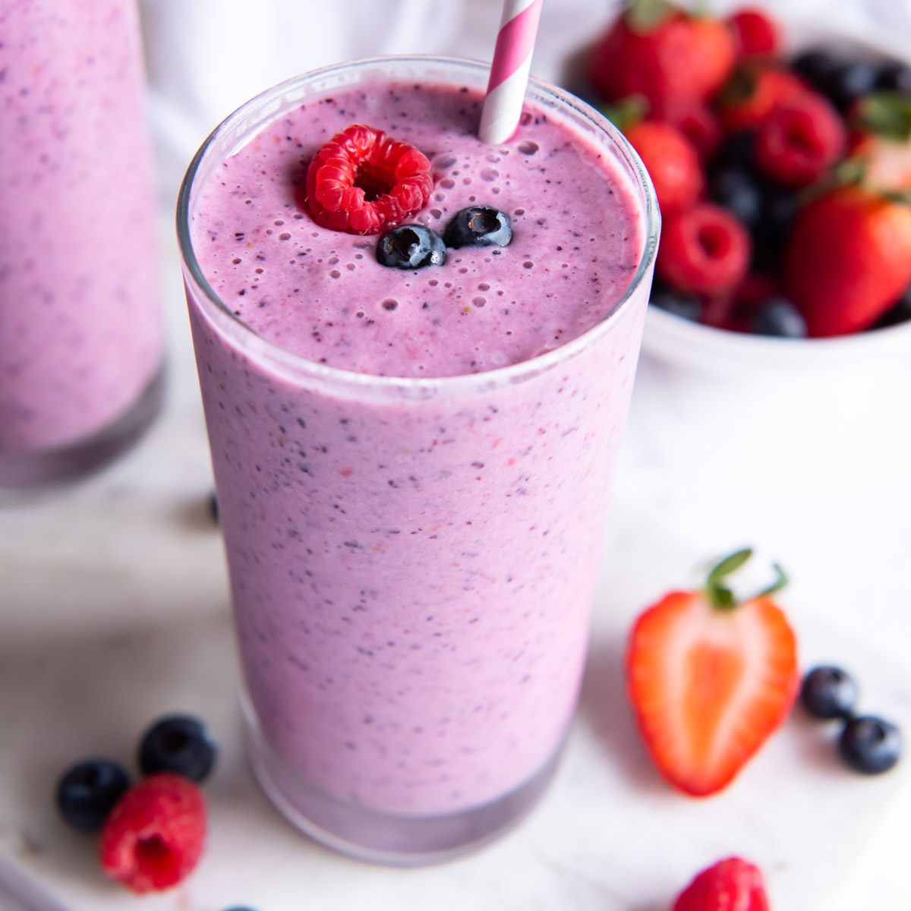

How to make Shakshuka

Description
This smoothie is good, easy to make, and very customizable. This is just the way I make it,
but feel free to change it to your tastes or add new ingredients.
Ingredients
- Strawberries, preferrably frozen
- Blueberries, preferrably frozen
- Honey
- Greek Yogurt of your choice
- Water or whatever milk you like
Steps
- Add the ingredients into a blender
- Blend until the smoothie is your preferred consistency